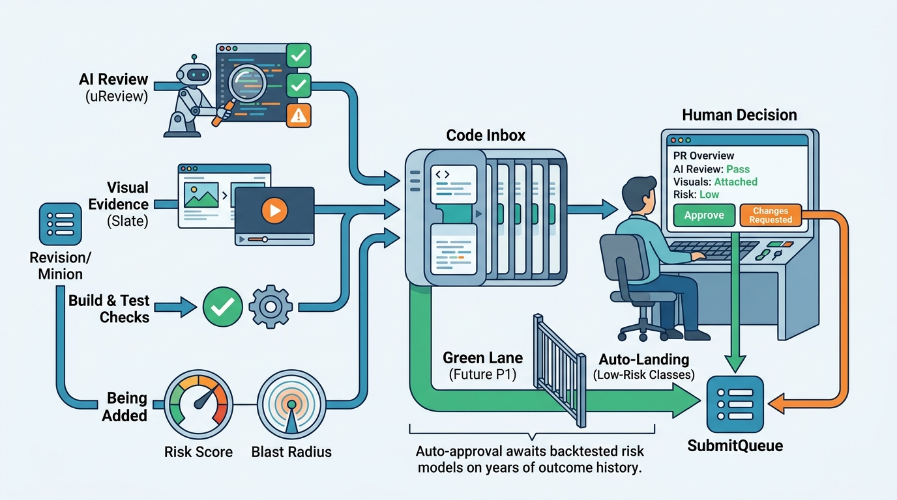

Part III — LIFECYCLE: The Feature Path, Rewired
Code Inbox: Spending Human Review Where the Risk Is

Image generated by Google Gemini (gemini-3-pro-image-preview)
Part III — LIFECYCLE: The Feature Path, Rewired

Image generated by Google Gemini (gemini-3-pro-image-preview)